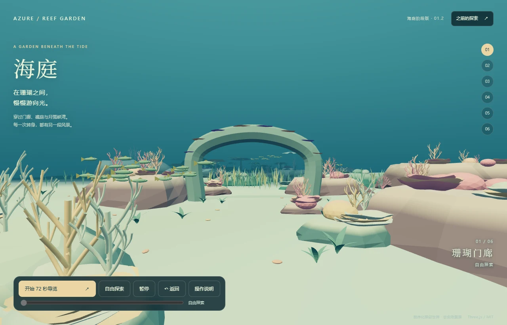

UNDER THE SURFACE / PROJECT JOURNAL
同一片海，
走过的每个版本。
从单体珊瑚到自由探索，再到海庭。这里可以直接看效果、比较变化，并进入保留下来的场景。
当前展示：海庭 01.2已发布技术原型 · 整体视觉未达标
01.2 已被用户否定视觉质量；发布和功能可运行不代表目标完成。

01看真实截图各版本独立画面，来源可查
02按需进入场景进入后可返回、切换版本
03保留完成状态实验可体验，历史结论保留
VERSION COLLECTION
版本，一眼看清。
已发布入口继续保留。
未发布实验不提供交互入口。
共 13 个版本
THE WORK BEHIND THE WATER
效果、源码和判断，
放在一起看。
这个页面整理已有成果。海域真实感、生物丰富度和空间连续性仍未达到项目目标。